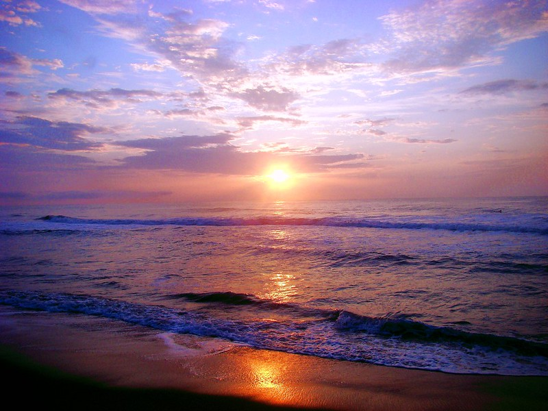

Maryland Coastal Coffee is a website that highlights four coffee shops near several Maryland waterways for residents or tourists looking for a scenic water view while enjoying some delicious coffee.
- Oscar's coffee is next to the Severn river, a sub estuary of the bay that empties into the Bay at Annapolis
- A Latte Enjoy is located on Ocean city's boardwalk in Maryland's Eastern shore overlooking the North Atlantic Ocean
- Order and Chaos Coffee is in Baltimore's Inner Harbor, overlooking the Patapsco river
- Illy Coffee is found at the National Harbor in Oxon Hill, bordered by the 405 mile long Potomac River

Annapolis - Oscar's Coffee

Ocean City - A Latte Enjoy

Baltimore - Order and Chaos Coffee

National Harbor - Illy Cafe